MA1508 Calculus · Chapter 4 · Section 4.6
Optimization
Translate a word problem into a one-variable objective, determine its feasible domain, and prove where its absolute optimum occurs. Textbook reading: Stewart §4.6 (pp. 299–311).
ONE EXAMPLE, BEFORE ANY THEORY
Same fence, different fields: which would you choose?
Shallow and wide
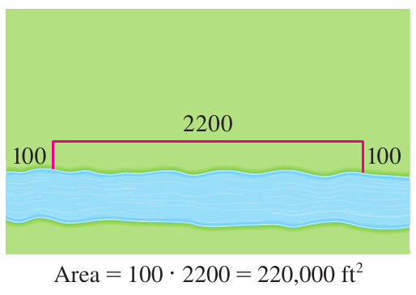
An intermediate shape
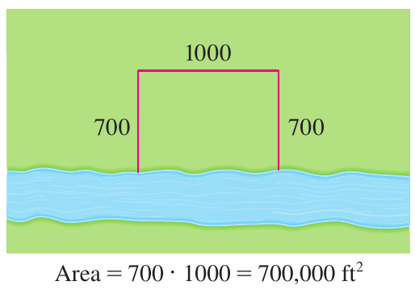
Deep and narrow
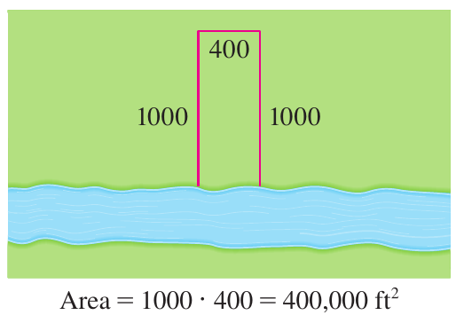
A fixed amount of fencing can enclose different areas. The best rectangle is found by combining a geometric constraint with an area function, then applying the derivative tests.
Every optimisation problem has that same shape: something to maximise or minimise, plus a rule linking the variables that stops you choosing each of them freely. Use the rule to remove all but one variable, and §4.2 already knows how to finish.
Begin with the fence, can, box and rent examples. The background connects Chapter 3’s neural-network training to minimizing a loss, alongside a fitted revenue model.
1. Motivation: the method of optimization
An optimization problem is a sentence with two ingredients: a quantity to be maximized or minimized (the objectiveObjectiveThe quantity you are trying to maximize or minimize — the function you differentiate.\( \max_{x}\ Q(x) \)), and a constraintConstraintThe equation that links the variables, used to eliminate all but one of them.\( g(x,y)=0 \) linking the variables. The method is uniform:
Always state the feasible domain before differentiating. A local test does not by itself prove a global optimum; use signs over the full domain, endpoint comparison, or a direct inequality.
2. Worked example A: the fence — a pure geometry optimum
A farmer has 2400 ft of fencing and wants to fence off a rectangular field that borders a straight river; no fence is needed along the river. What dimensions maximize the enclosed area?
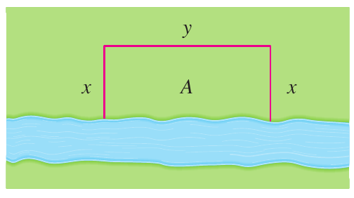
Before calculating: what happens to the area if the field becomes extremely shallow or extremely narrow?
Show answerHide answer
- Set up. Let \(x\) be the length of each of the two equal sides perpendicular to the river, and \(y\) the length of the side parallel to the river. The constraint is \(2x+y=2400\), so \(y=2400-2x\).
- Objective. \[ A(x) \;=\; x\cdot y \;=\; x(2400-2x) \;=\; 2400x-2x^{2}, \qquad 0\le x\le1200. \] The domain: \(x\ge0\) and \(y=2400-2x\ge0\), so \(0\le x\le1200\).
- Critical point. \[ A'(x) \;=\; 2400-4x \;=\; 0 \quad\Rightarrow\quad x=600. \] Rules: power rule, constant-multiple, sum rule.
- Verify it is the maximum. \(A''(x)=-4<0\) everywhere, so \(A\) is concave down and \(x=600\) is the global maximum on the closed interval (the endpoints give \(A=0\)).
- Dimensions and value. \(y=2400-2(600)=1200\), so the field is \(600\) ft deep by \(1200\) ft along the river, and \[ A_{\max}=600\cdot1200=720{,}000\text{ ft}^{2}. \]
See the maximum on the area curve
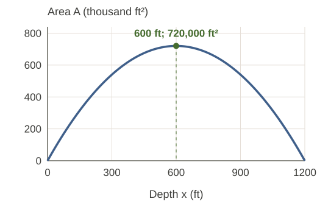
3. Worked example B: the can — minimizing surface area for a fixed volume
A cylindrical can must hold \(V=1000\) cm³. Find the radius \(r\) and height \(h\) that minimize the surface area (the amount of metal).
Where does the metal go?
A closed cylindrical can
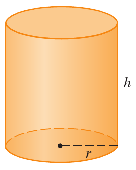
Two lids and the curved side
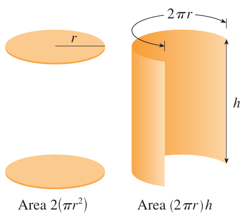
Predict: which part uses more metal when the can gets wider? Can either extreme shape be economical?
Show answerHide answer
- Constraint. Volume \(V=\pi r^{2}h=1000\), so \(h=1000/(\pi r^{2})\).
- Objective. Surface area = two lids + side: \[ S(r) \;=\; 2\pi r^{2} + 2\pi r h \;=\; 2\pi r^{2} + \frac{2V}{r} \;=\; 2\pi r^{2} + \frac{2000}{r}, \qquad r>0. \]
- Critical point. \[ S'(r) \;=\; 4\pi r - \frac{2000}{r^{2}} \;=\; 0 \quad\Rightarrow\quad r^{3}=\frac{2000}{4\pi}=\frac{500}{\pi} \quad\Rightarrow\quad r=\Bigl(\frac{V}{2\pi}\Bigr)^{1/3}=5.4192607014\text{ cm}. \]
- Height. \[ h \;=\; \frac{V}{\pi r^{2}} \;=\; 2r \;=\; 10.8385214028\text{ cm}. \] So the optimal can is as tall as it is wide (\(h=2r\)).
- Verify minimum. \(S''(r)=4\pi+4000/r^{3}>0\) for all \(r>0\), so \(S\) is convex and the critical point is the global minimum.
- Value. \[ S_{\min} \;=\; 2\pi r^{2}+\frac{2000}{r} \;=\; 553.5810445932\text{ cm}^{2}. \]
The textbook's surface-area curve
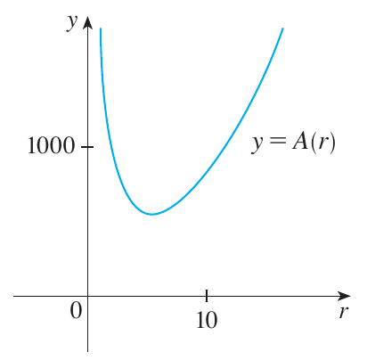
4. Worked example C: the box — a three-variable problem reduced to one
A rectangular box with a square base and a top is to be made from \(10\) m² of material. Find the dimensions that maximize the volume.
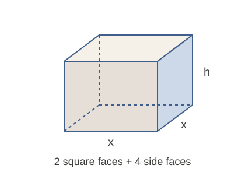
Predict: will a very tall, thin box or a very flat box hold much volume when the amount of material is fixed?
Show answerHide answer
- Set up. Let \(x\) be the side of the square base and \(h\) the height. Surface area (top + bottom + four sides): \(2x^{2}+4xh=10\).
- Objective. \(V=x^{2}h\). From the constraint, \(h=(10-2x^{2})/(4x)\), so \[ V(x) \;=\; x^{2}\cdot\frac{10-2x^{2}}{4x} \;=\; \frac{10x-2x^{3}}{4} \;=\; \frac{5x-x^{3}}{2}, \qquad 0<x<\sqrt{5}. \] The physical dimensions must be positive. The polynomial volume extends continuously to \([0,\sqrt5]\), with volume 0 at both endpoints; these endpoint values are limiting degenerate designs, not substitution into the formula for \(h\) at \(x=0\).
- Critical point. \[ V'(x) \;=\; \frac{5-3x^{2}}{2} \;=\; 0 \quad\Rightarrow\quad x^{2}=\frac{5}{3} \quad\Rightarrow\quad x=\sqrt{\frac{5}{3}}=1.2909944487\text{ m}. \]
- Height. \[ h \;=\; \frac{10-2x^{2}}{4x} \;=\; \frac{10-10/3}{4\sqrt{5/3}} \;=\; \frac{20/3}{4\sqrt{5/3}} \;=\; \sqrt{\frac{5}{3}} \;=\; 1.2909944487\text{ m}. \] So the optimal box is a cube: \(x=h=\sqrt{5/3}\).
- Verify maximum. \(V''(x)=-3x<0\) on \((0,\sqrt{5})\), so \(V\) is concave down and the critical point is the global maximum.
- Value. \[ V_{\max} \;=\; x^{3} \;=\; \Bigl(\frac{5}{3}\Bigr)^{3/2} \;=\; 2.1516574146\text{ m}^{3}. \]
Why the best box lies between the extremes
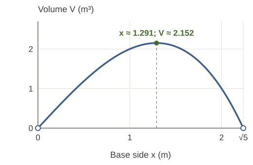
5. Worked example D: rent and revenue
A real-estate office manages \(100\) apartments. Each apartment rents for $800/month when all units are occupied; for each $10 increase in rent, one unit becomes vacant. What rent maximizes monthly revenue, and what is the revenue?
Predict: does a higher rent always mean higher revenue? Compare $800 × 100 occupied units, $850 × 95 units, and $1000 × 80 units.
Show answerHide answer
- Set up. Let \(k\) be the number of $10 increases. We first allow real \(k\) as a continuous relaxation, then check the permitted integer values. Rent is \(800+10k\), occupied units are \(100-k\), so \[ R(k)=(800+10k)(100-k), \qquad 0\le k\le100. \]
- Expand and differentiate. \[ R(k)=80000+200k-10k^{2}, \qquad R'(k)=200-20k. \]
- Critical point. \(R'(k)=0\Rightarrow k=10\). \(R''(k)=-20<0\), so it is a maximum.
- Optimal rent and revenue. The continuous optimum \(k=10\) is itself an integer and therefore also wins among allowed integer values. Rent \(=800+100=900\); occupied \(=90\); revenue \(=900\cdot90=\$81{,}000\).
More rent per unit, fewer occupied units
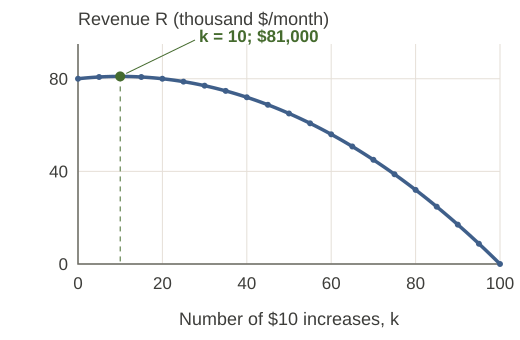
6. Data-science background — from backpropagation to optimization
Optional background. Return to the two-neuron network in Chapter 3 §3.4. Backpropagation uses the chain rule to calculate how the squared-error loss changes with each weight and bias. Optimization uses those derivatives to choose parameter updates that reduce the loss.
The same network has \(a_i=\tanh(w_ix+b_i)\), prediction \(\hat y=v_1a_1+v_2a_2+c\), and loss \(L=\tfrac12(\hat y-t)^2\). Training fixes the input and target and adjusts parameters. To use this chapter’s one-variable calculus, freeze every parameter except the output bias \(c\).
Keep the network; choose one variable
Use the Chapter 3 starting values: \(x=1\), \(t=0.5\), \(w_1=0.8\), \(b_1=0.1\), \(w_2=-0.6\), \(b_2=0.2\), \(v_1=0.7\), \(v_2=-0.5\), and \(c_0=0.1\). The frozen hidden contribution is \(K=0.7\tanh(0.9)-0.5\tanh(-0.4)\approx0.6914\).
Thus \(c_*=t-K\approx-0.1914\) is the unique global minimum of this slice: \(\ell(c)\ge0\), with equality exactly at \(c=c_*\). Chapter 3’s gradient \(\partial L/\partial c=\hat y-t\) is precisely this one-variable derivative.
A loss curve for the output bias
A gradient gives a direction; the learning rate gives a distance
For this quadratic slice, a constant learning rate gives convergence from every starting value when \(0<\eta<2\). At \(\eta=1\), one update reaches the minimum. At \(\eta=2\), a non-optimal start alternates with unchanged loss; for \(\eta>2\), the errors grow. The factor \(1-\eta\) explains these behaviours exactly.
Same start, two learning rates
These plots update only c for one fixed training example. Chapter 3’s training button updates all seven parameters simultaneously. The full neural-network loss need not be convex, and this slice’s step-size bound is not a bound for the whole network or evidence of good prediction on unseen data.
Try one update. Starting from \(c_0=0.1\), use \(\eta=0.5\). Find the new bias and compare the loss before and after.
Show answerHide answer
Check the first update: with \(\eta=0.5\), \(c_1=c_0-0.5(K+c_0-t)\approx-0.0457\). Since the error is halved, the loss is divided by four: \(\ell(c_0)\approx0.04245\) and \(\ell(c_1)\approx0.01061\).
Another objective: fitted revenue
For the fitted demand model \(q(p)=100-2p\), feasible price and demand require \(0\le p\le50\). Revenue \(R(p)=100p-2p^2\) is maximized at \(p=25\): endpoint revenues are 0 and \(R(25)=1250\). Both examples optimize a specified model; a calculus optimum alone does not establish that the model describes reality.
7. Common mistakes and check your understanding
- Use the constraint to reduce to one variable; retain the domain restrictions.
- On a closed bounded interval, the closed-interval method requires continuity. Compare endpoints and all interior critical candidates.
- A second derivative test is local. Use derivative signs over the whole domain, compare endpoints, or prove an inequality for a global claim.
- For integer decisions, solve the continuous model and check feasible neighbouring integers and boundaries.
- Keep working precision; round only the final dimensions.
Minimise \(Q(x)=(x-3)^2\) for \(0\le x\le2\). Is there an interior stationary point?
Show answerHide answer
- \(Q'(x)=2(x-3)<0\) throughout \((0,2)\), so \(Q\) decreases. The stationary point \(x=3\) is not feasible.
- Compare endpoints: \(Q(0)=9\), \(Q(2)=1\). The minimum is at the right endpoint.